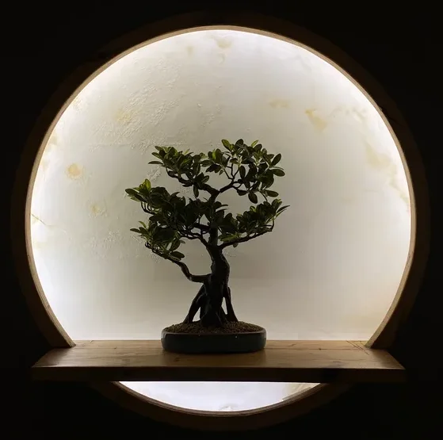
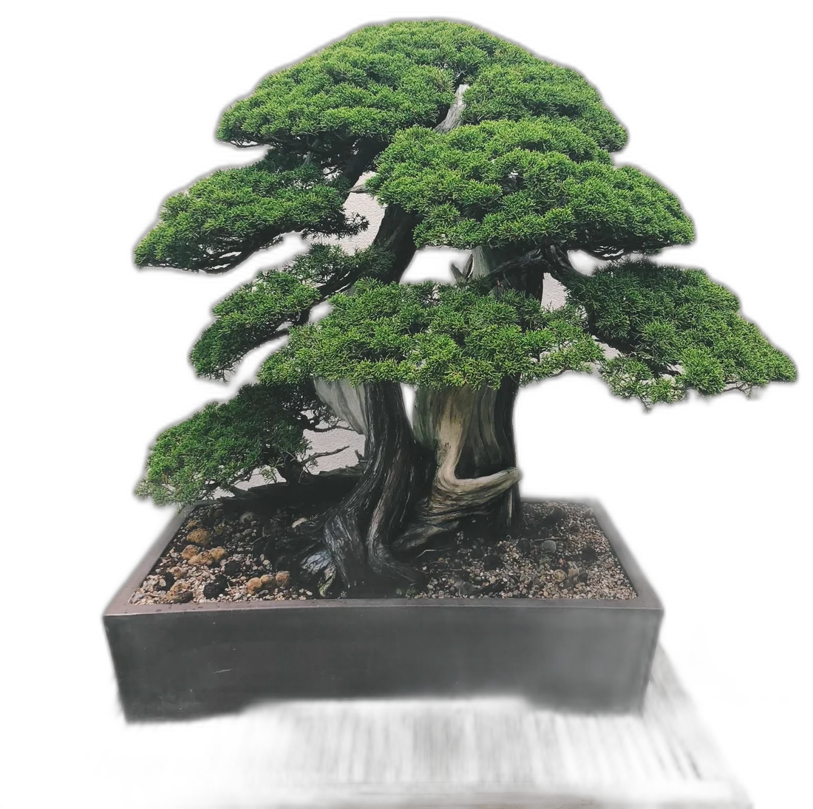

Ainay-le-Vieil · Cher
L'Atelier du Bonsaï Yakushima
Des stages découverte et de perfectionnement pour apprendre à cultiver, façonner et faire vivre votre propre bonsaï, dans une ambiance conviviale et décontractée.

Présentation
Apprendre l'art du bonsaï, à votre rythme
Dans une ambiance conviviale et décontractée, je vous propose des stages pour débutants, en commençant par des cours d'introduction aux bases de cet art, avec une progression pour aboutir à la création de son propre arbre.
Pour les personnes plus confirmées, les stages serviront à améliorer les connaissances techniques.
Sous forme d'ateliers pédagogiques en groupe ou individuel, nous aborderons de nombreux points essentiels à la pratique du bonsaï.
Voir le programme des ateliersAu programme
Les thèmes abordés en atelier
Formes et styles
Découvrir les grandes formes et styles de bonsaï.
Outils et matériel
Outils, substrats, conseils d'achats pour bien débuter.
Taille et pinçage
Les gestes techniques pour façonner l'arbre.
Ligature et pliage
Donner sa forme aux branches avec précision.
Rempotage
Rempotage et taille des racines.
Le Tokonoma
Comment exposer un arbre selon la tradition japonaise.

À propos
Qui suis‑je ?
« Le bonsaï a été pour moi une vraie découverte : humilité, respect de l'arbre et la paix que cela dégage m'ont beaucoup inspirée. »
Maria Millet pratique le bonsaï depuis plus de 25 ans et s'est formée pendant 8 ans à l'Académie Bonsaï, auprès de Senseï Yudji Akanuma.
En savoir plus sur Maria